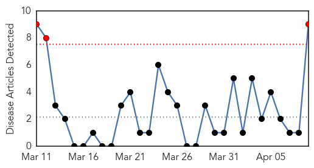
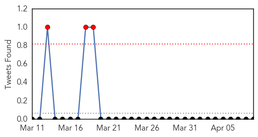
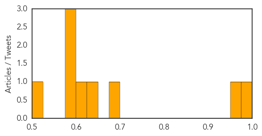
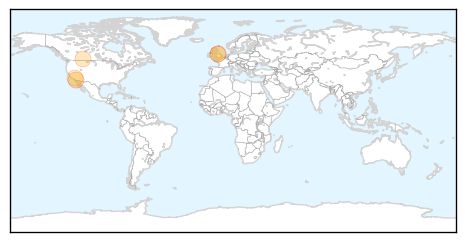

Cholera
30-Day Web Trend
3 alerts, 0 warnings

30-Day Twitter Trend
3 alerts, 0 warnings

Article Locations

Article Confidences
Top Articles:
- 0.988
- Time Is Running Out for Haiti
- 0.951
- Lassa fever kills one in Plateau, 5 hospitalised
- 0.685
- MSF accuses UN of ‘indifference’ to plight of South Sudan refugees
- 0.640
- No toilets for grape workers
- 0.614
- Doctors Without Borders blasts UN in S Sudan
- 0.598
- Doctors Without Borders blasts UN in South Sudan
- 0.594
- U.N. mission in South Sudan accused by Doctors Without Borders of "indifference" to refugees
- 0.594
- Doctors group raps UN attitude to refugees
- 0.523
- Nations cannot ignore disease
Top Tweets:
-
No tweets found for Apr 09, 2014
Pertussis
30-Day Web Trend
1 alerts, 0 warnings

30-Day Twitter Trend
0 alerts, 0 warnings

Article Locations
Article Confidences

Top Articles:
- 0.907
- 10 New Pertussis Diagnoses Reported Last Week in San Diego...
- 0.779
- Whooping cough outbreak seizes southern Alberta
- 0.755
- Meghan Mcnutt-Anderson's Whooping Cough Baby Photo A Warning To Anti-Vaccine Parents
- 0.721
- Mandatory vaccinations expanding for Waterloo Region students
- 0.644
- You don’t have right to imperil all children with vaccine choice
Top Tweets:
-
No tweets found for Apr 09, 2014